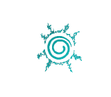
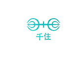
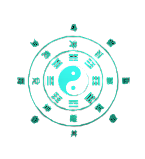

Uzumaki
Sempat menjadi bagian Klan Uzushiogakure yang ditakuti karena kekuatan cakra mereka yang sangat besar, Klan Uzumaki terpaksa bubar setelah desa mereka dihancurkan.
Anggota Uzumaki lalu tersebar ke berbagai penjuru. Ibu Naruto, Kushina, pindah ke Konohagakure. Ia merupakan jinchuriki yang ditunjuk memiliki kekuatan dari Kurama.

Senju
Klan Senju bersama dengan Uchiha adalah pendiri Konohagakure. Kepala klan Senju, Hashirama kemudian menjadi Hokage pertama dan saudaranya menjadi Hokage kedua.
Di luar kepemimpinannya sebagai Hokage, Hashirama adalah salah satu shinobi terkuat yang pernah hidup.
Uchiha
Klan Uchiha dikenal memiliki kekuatan Sharingan dan Mangekyo yang kuat. Sharingan meningkatkan pandangan penggunanya serta memungkinkan mereka untuk meniru jutsu lawan mereka. Anggota klan Uchiha yang menonjol adalah Madara, Itachi, dan Sasuke.

Hiyuga
Klan Hyuga dikenal karena mata mereka tidak memiliki pupil. Disebut sebagai Byakugan, merupakan salah satu kekuatan mata paling kuat bersamaan dengan Sharingan dan Rinnegan..